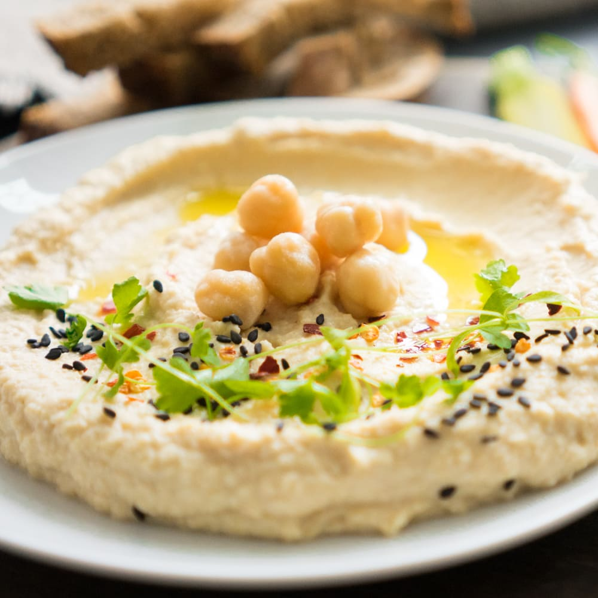

Hummus

Hummus Description
Hummus, also spelled hommus or houmous, is a dip of Arab origin, spread, or savory dish made from cooked, mashed
chickpeas blended with tahini, lemon juice, and garlic. The standard garnish in the Middle East includes olive
oil, a few whole chickpeas, parsley, and paprika.
- 3 cups cooked chickpeas, peeled (from 1 to 1 ¼ cup dry chickpeas or from quality canned chickpeas. See
recipe notes for more instructions on cooking and peeling chickpeas)
- 1 to 2 garlic cloves, minced
- 3 to 4 ice cubes
- ⅓ cup (79 grams) tahini paste
- 2½ tsp kosher salt
- Juice of 1 lemon
- Early Harvest Greek extra virgin olive oil
- Add chickpeas and minced garlic to the bowl of a food processor. Puree until a smooth, powder-like mixture
forms.
- While processor is running, add ice cubes, tahini, salt, and lemon juice. Blend for about 4 minutes or so.
Check, and if the consistency is too thick still, run processor and slowly add a little hot water. Blend
until you reach desired silky smooth consistency.
- Spread in a serving bowl and add a generous drizzle of Early Harvest EVOO. Add a few chickpeas to the
middle, if you like. Sprinkle sumac on top. Enjoy with warm pita wedges and your favorite veggies.